《天地劫》系列
时间 名称 类型
1999年9月15日 《天地劫：神魔至尊传》 战棋RSLG
2001年11月18日 《天地劫序传：幽城幻剑录》 角色扮演RPG
2002年12月15日 《天地劫外章：寰神结》 角色扮演RPG
论名气，《天地劫》系列比不上“大宇双剑”：他既没有《仙剑》中那样缠绵悱恻的爱情，也没有《轩辕剑》的历史积淀作为背景。然而，他却是让其玩家交口称赞津津乐道、不遗余力地向周围的朋友推荐、并心甘情愿为之一迷七八年的作品――在没有续作的情况下，能让他的玩家念念叨叨地记上这许多年、这不能不称为“功底”，不能不称为“经典”。
也许有FANS要对某赖的说辞表示不满了：“啥米叫没有‘缠绵悱恻的爱情’？！夏侯仪和冰璃那种刻骨铭心可穿千年的爱慕难道不是缠绵悱恻的爱情么？！”――这自然也是。但《天地劫》毕竟和《仙剑》那样着重描写爱情的作品不一样，若论对《天地劫》三部曲最深的感受，要提的，绝不仅仅是主角们的爱情故事，而是一路走来，同伴间彼此的生死与共、惺惺相惜，信其友，换其命，同生死，共患难。
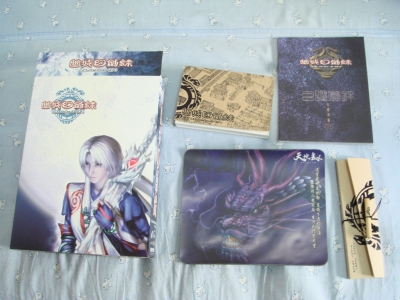
笔者的收藏。《天地劫》三部曲是在笔者心中，无法替代的经典。
《天地劫：神魔至尊传》
公司：汉堂国际
时间：1999年9月15日
类型：战棋RSLG
配置：
主机：P133以上
内存：16MB
显卡：具高彩显示能力含2MB闪存显卡
声卡：声霸卡系列或相容之音效卡
光驱：4倍数
硬盘：500MB以上
操作：键盘
操作系统：WIN95/98/2000/XP
汉堂国际是以战棋游戏《炎龙骑士团》而大获成功的。不过，在获得粉丝们的肯定之后，汉堂并没有满足于现有的成就，而是继续研发独创性的战棋游戏――这一次，他们完全抛弃了日式战棋的影响，建立了属于自身的“中国风”。
故事的背景发生在传说中的“江湖”――一个带有奇幻色彩、有妖魔存在的江湖。天玄门大弟子殷剑平，生性善良宅心仁厚。因对年幼的妖魔产生了恻隐之心，他被其师父应奉仁逐出师门，从而踏上了漫漫江湖路……
且不说游戏素质如何如何，作为一款强调战术战略的战棋游戏，《神魔至尊传》不但以其高超的难度和杰出的平衡性让玩家一玩再玩，更是塑造了一个峰回路转跌宕起伏的武侠故事，让玩家一品再品。从一个看似平凡的剑客入手，故事一步步展开，也逐步揭开了庞大的游戏背景以及纷繁的人物纠葛。总之一句话，让人欲罢不能。
汉堂向来以难度而闻名，《神魔至尊传》的故事更是贯彻了这一点。再加上游戏当中每个角色的能力和擅长方向截然不同，每个同伴在玩家而言都是独一无二、且是排兵布阵中必不可少的――因而，伴随着游戏的进行，玩家的队伍中最多会出现十个人物，但这十人，每个人都是活灵活现，其形象可以用“深入人心”来形容也不为过。
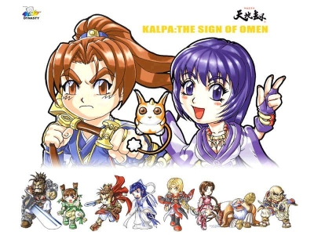
《神魔至尊传》中十个我方角色的Q版形象图。
时至今日，十年之久，笔者某赖依然能清清楚楚地记得，殷剑平每次行动之前，必定背起剑匣行走数步，再将剑匣稳稳敦于地上；封寒月咒法无双，每升一级，衣袂与发梢随风轻曳；上官远长枪凌厉，一招“泼风枪”武得虎虎生风；鲜于超一把大剑，俯仰之间能有劈山分海之势；紫枫仙风道骨，以披帛索带伤人，白索摇曳，纵使无风，亦飘逸若为拂风；真胤一杖伏魔杵，荡平妖魔邪法，杀生为护生；韩千秀双轮映月，英姿飒爽犹酣战，一招一式收放自如；燕明蓉小女儿娇态，一把灵剑如露如电，升级后更是可爱地跳脚；夏侯仪低眉拂发，不屑冷哼，背影却是寂寥；不净散人如笑弥勒，酒壶不离身，蒲扇乱摇笑呵呵……
算起来，这是十年前所经历的人物了，可直到现下，那一幕幕的画面依然能清晰地浮现在笔者面前。这岂是一般小品游戏能达到的地步？只能说，汉堂在人物塑造与刻画的层面，功底非凡。
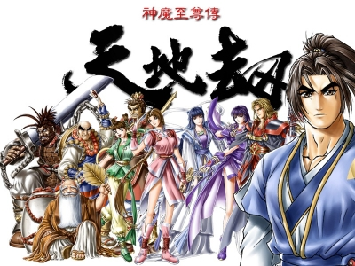
许多第一次进入天地劫世界的人，便从此与汉堂结下不解情缘。
当然，《神魔至尊传》在当时于大陆地区的盛行，除了游戏自身素质之外，还有其背景因素。1999年，在学生仔对于动辄百来块的正版游戏长吁短叹的时候，仅仅25元的《神魔至尊传》成了一些人的入门游戏。再加上汉堂对剧情把握的功力、人物角色刻画的功力、战斗平衡性的功力、以及华丽多变的战斗动作，使得他成为了很多玩家心目中的一个经典。
然而，虽然《神魔》有着如此多的优点，但同时他的缺点也是致命的――画面。还是那个问题，如果看设定画集和场景图，会发现其实汉堂的画面相当细致，一点也不差。然而，无论再怎么美好的画面，一旦以320X200的低分辨率来显示，依然是大打折扣甚至可以说惨不忍睹。更何况当时已经是1999年，玩家们早已被640*480以上的清晰画面所养刁了胃口，而汉堂还是坚持自己的风格，这必然是放弃了那些对画面有着高超要求的新玩家。
《天地劫序章：幽城幻剑录》
公司：汉堂国际
时间：2001年11月18日
类型：角色扮演RPG
配置：
主机：P266以上
内存：128MB
硬盘：2.5GB以上
显卡：对应DX7.0以上显卡
声卡：对应DX7.0以上声卡
操作：键盘、鼠标
操作系统：WIN95/98/2000/XP
如果说“《神魔至尊传》之中伙伴的友情，是因为“战棋”的独特类型，而让玩家津津乐道印象深刻”的话，那到了《幽城幻剑录》转换成传统RPG之后，这种说法便不攻自破。
在《神魔至尊传》之后的两年，汉堂又开发了《疾风少年队》和《致命武力1》这两款作品。随即，深受好评的《天地劫》再出续作――《幽城幻剑录》！
令玩家们大跌眼镜的是，这次的游戏类型，竟从汉堂最为擅长的“战棋RSLG”转变为完全的“角色扮演RPG”。就在玩家们对此表示怀疑的时候，《幽城幻剑录》却交出了令人无比满意的一份答卷。他的存在，也真正奠定了《天地劫》经典的基础。
《幽城幻剑录》这款游戏有多出色？现在的新玩家可能对此一点概念也没有。毕竟汉堂经常被冠以“叫好不叫座”这个形容――游戏很好，但卖不好。其原因暂且压下，容后细表。不管怎么说，虽然他的知名度比不上《仙剑》，比不上《轩辕剑》，但论起游戏素质，其实《幽城》比之全然不差，甚至可以说，有更为出色的地方。
2002《游戏之星GameStar》得奖名单：
最佳剧本奖天地劫序传：幽城幻剑录汉堂国际资讯(股)公司
最佳动画奖天地劫序传：幽城幻剑录汉堂国际资讯(股)公司
由电脑玩家主办的第五届《电脑游戏金像奖》得奖名单：
编辑评选：最佳国产游戏――《幽城幻剑录》
专家评选：最佳游戏企划――《幽城幻剑录》
这些奖项，也从一个侧面反应出当年《幽城》的受欢迎程度。事实上，通关《幽城》的玩家，十之八九成为了汉堂的死忠。
通关的玩家皆知，《幽城幻剑录》最大的伏笔，在于夏侯仪与冰璃之间的爱情。转生与记忆，昔日的伙伴追寻千年，却在现世萌生爱意。只可惜造化弄人，立场的转变，让两人不得不向创生的尊神进行挑战，最终落得个天涯相隔再不相见的有情人不成眷属的下场。可以说，在见到那个最完整的真结局之后，不被他感动的人，怕是少数。
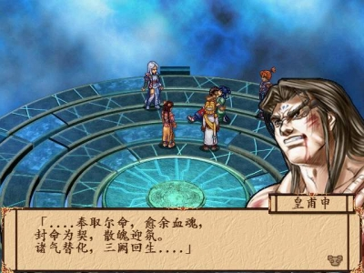
封大姐与皇甫申的结局，让人唏嘘不已。
可，即便是如此，《幽城》之中，“伙伴”的定义，也是让人唏嘘不已。封铃笙自始自终一派大姐作风，从某种程度上说，更像一位精神导师，是她的出现，开拓了夏侯仪的视野。是以在见到真结局之前，单看封大姐为挚爱而亡却始终无怨无悔的段落，笔者已是被虐得一塌糊涂，恨不能抽飞了皇甫申救回大姐的性命。而既结局之后，夏侯仪与古伦德相约“到西方路途遥远，只怕没能有机会看到古大哥以国君之姿来迎，但若我得能查明一切，终我一生之中，必会前去拜会一次”之时，不禁让人唏嘘并感慨万千。
笔者向来佩服《天地劫》系列对人物的刻画塑造，故事里的人物都是多面的，绝非脸谱化可用一言以蔽之的类型。
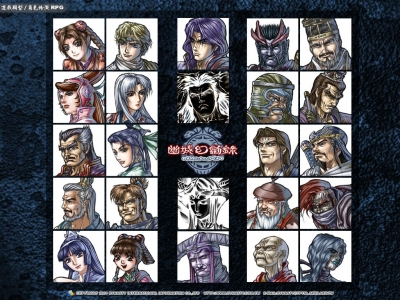
《幽城》中的角色头像，可以说，每个人物都形象生动。连反角，如周崇与朱浩，都鲜活得让人恨不得上去两巴掌抽到死。
随手举例，比如说封铃笙，初见之时，或许只觉得她是豪爽的大姐，或许可用日漫中的“御姐”二字来形容。可随着故事的进行，随着结伴相行，随着角色之间的亲近，封大姐的过往被慢慢揭开，处事风格也逐渐显现：她处事的睿智与果断，她对挚爱的执着与痴狂，绝不仅仅是可以简单概括的类型。
而“夏侯仪”这个角色，怕是汉堂刻画人物之精彩的最好例证。早在《神魔至尊传》就出场的夏侯仪，距离续作《幽城幻剑录》结局时的他，已是八年之后了。那个在《神魔》之中“台词不超过十句，可人气超高盖过主角”的老夏侯仪，以其金发碧眼的帅气扮相、神秘的风格、冷傲不羁的气质、以及看似可能苦大仇深的过往，让玩家有一探究竟的念头。而到了《幽城幻剑录》开始之时，那个有着型男酷哥气质的老夏侯仪，却竟然是长在山村村落之中的淳朴青年，这不禁让人大跌眼镜，甚至有一种做出ORZ失意体前屈的冲动。
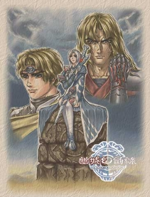
当年的淳朴青年，是如何成为那个冷漠高傲的狂徒，真是一言难尽。
然而，就是这么一个质朴的山村青年，如何经历一步步的人生变故，最终成为愤怒地吼出“用禁法也好，用邪法也好，就算要出卖我的魂魄，就算会因此堕入无边地狱，我终有一日会真正将幽界降临到人间，永远毁破你们死遵活循的那些枢仪法理！”的他，再到《神魔》之中那个变得冷漠、傲慢、狂邪的他，性情的转变缘于境遇的转变，缘于失去亲人挚友的苦痛、以及对世间无情常理的控诉。但，即便是那个看似冷漠的老夏侯仪，却会为敌方宁替死，只因“八年前我也曾身陷如此绝境，然而那时我没勇气用禁法，结果酿成我毕生的恨事……我很羡慕你。”――这一刻，这个恨世的狂徒，一如当年的那个质朴的青年，会为了这个生他养他的明世，奔走不停费劲心力，哪怕最后落得个“我为天下，天下负我”的凄凉结局。
这样丰富而多面的角色，绝非一些游戏中脸谱化的人物设定可以与之相比的。特别是近期的一些作品，声光画面日益精美，可人物塑造却失败到极点。性格简单不似实在人不说，更糟糕的是，满口满脑子流行思想――诚然，对年纪较轻的玩家来说，这样或许比较符合他们的口味和审美观，但若当真想书写一个非主流个性青年，何苦将背景设置在中国古代，一边强调这是历史背景下的故事一边让角色穿露腿装满口“�灏。 保俊�―如果“让角色融合于背景、生存于该时代”这个最简单的要求都做不到，还谈什么好故事？！
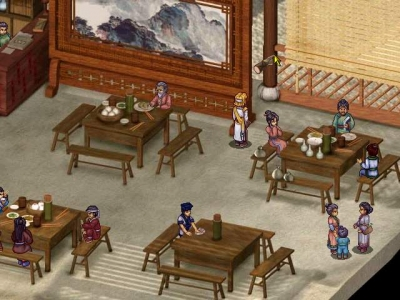
饭馆截图，食客们动作各异：比如那个扎头巾的莽汉，还将脚翘到了凳子上；短打扮的店小二正忙着擦桌子；最左边的食客是个左撇子，右手举碗左手拿筷猛扒饭吃――这份对细节的严谨和认真，值得敬佩！
对于现在的玩家来说，《天地劫》或许已经不能进入他们的视野。但笔者固执地认为，他是一个经典。论游戏素质可达中上，论剧情与人物可达上上，更可贵的是，游戏中无时不体现严谨的态度――且不论是庞大的剧情构架，且不论是人物衣着动作的细致，且不论是昌盛热闹的城镇市集，但论随意一个场景：且看这张随手拿出来的游戏截图――
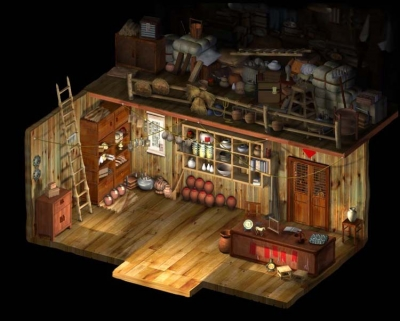
杂货铺的场景图。请注意看阁楼上堆砌的物品，从斗笠蓑衣，到竹篾水桶，还有横着的长梯。器皿上为了放灰，有的还盖上了抹布。如此生活化的细致，怎能不让人尊重！
这是一个小镇的杂货铺，从杂货种类的繁多，到阁楼杂物的堆积如山，当真像是一个做生意的人家。平心而论，能做出这样生活感、能做出这样认真与细致的游戏，能有几个？！在这样认真与严谨的态度之下，做出来的好故事好游戏，他不称“经典”，谁能称“经典”？！
就在不日前，笔者曾于某论坛看见一些玩家的论战，内容大致是关于经典游戏的话题。在汉堂饭提出《幽城幻剑录》之后，有仙剑饭提出“《幽城》能和《仙四》比么？”这样的质疑。笔者见之，在大为好笑的同时，也有一丝自豪：作为一名将《幽城》和《仙四》都通关并也都很喜欢的玩家，《幽城》这款2001年的作品，能与07年的《仙四》相提并论且不落下风，也实是幸甚。
但同时，汉堂的弊端也在《幽城幻剑录》上一览无遗。这么一款杰出的作品，为何落得个“叫好不叫座”的可悲境地？很大的一点问题在于：汉堂是认真是严谨，他们耗费了两年半的时间打造这么一个让玩家瞠目结舌惊呼“神作”的游戏，但他们高估了玩家的耐性，也低估了市场的残酷。这已经不是那个人人都会细细品味游戏的时代――
《幽城》的战斗是精彩是过瘾，但难度太高、战斗速度极快，让玩家往往手忙脚乱；
《幽城》的界面是漂亮是古朴，但很多人却找不着明确表述的“退出”两个字；
《幽城》的剧情是庞大是经典，但慢慢铺陈渐入佳境，却不是所有人都有耐心玩下去；
《幽城》的台词及文字表述是有文化底蕴，但很多玩家更乐意看见浅显易懂的大白话；
《幽城》的谜题是古典是及有中国文化，但又有几个玩家看过《易经》是啥米东西？！
终究成为阳春白雪，曲高和寡。
《天地劫外传：寰神结》
公司：汉堂国际
时间：2002年12月15日
类型：角色扮演RPG
配置：
主机：P266以上
内存：128MB
硬盘：2GB以上
显卡：对应DX7.0以上显卡
操作：键盘、鼠标
操作系统：WIN95/98/2000/XP
在《幽城幻剑录》的大获成功之后，时隔一年，汉堂推出了《天地劫》系列的第三作――《寰神结》。
平心而论，《寰神结》确实是一部赶工之作，在各方面对《幽城》都是中规中矩。虽然在系统上比起《幽城》来说有着一定的改进和调整，可基本风格还是大差不差。绝没有《幽城》出现时那种让玩家眼前一亮、大呼“神作！”的激动。
不过总体来说，汉堂还是自己原先的基础上，在《寰神结》上加入了一些新的改进――或者说，向市场的妥协。比如人物头像的绘制等等，比起前作更贴近市场大众的审美风格（相对来说）。不过对于笔者个人来说，汉堂对人物的刻画，无论从外形画面到角色性格，都极具气势，绝不是时下流行的那些小白脸可以比拟的。
对于FANS们来说，《寰神结》最大的优点就是将整个《天地劫》三部曲构成了一个完整的故事。因为《寰神结》这一部的主角殷千炀，正是第一部《神魔至尊传》的主角殷千炀的生父、也是第一部的魔头BOSS。这段往事说起来，毫不夸张地说，真正是闻着伤心、见者流泪啊……
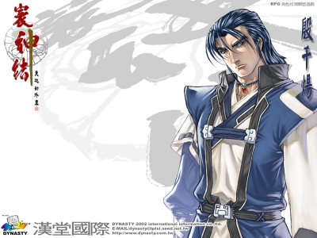
殷千炀，《寰神结》中的正派主角，《神魔至尊传》中的反派魔头剑邪，此时此刻，却只是一个正直的青年。
《天地劫》系列，常常以其人物角色的曲折经历，立场的转变，给人以思考，留下深深的叹息。《寰神结》中的殷千炀就是其中代表。最初，他为了打败蚩尤而经历了种种历练，之后，造化弄人，他却又不得不为了复活蚩尤而不惜和亲子刀剑相向。从始至终，殷千炀想要守护的，一直就是那个成为他发妻的女子。他不会像皇甫申一样，因为背负着煞星就臣服于星象中既定的轨迹之下。殷千炀也不是《幽城》中那个单纯的夏侯仪，明知自己的宿命却还是不断地去挑战和抗争，想要证明自己的存在并不是只有罗喉使者这一种可能。殷千炀是孤傲的，自己的道路就应该由自己来选择。而天上那些顺着轨道运行着的星宿，就随他们高兴去吧！即使最后的结果，依然相同于所谓的“天命”。但是，至少过程中，他是自己进行了选择的，决不会将一切的悲哀归咎于“命运”之上。
殷千炀，《寰神结》中的正派主角，《神魔至尊传》中的反派魔头剑邪，想必从来不曾为自己的选择后悔过。因为，他一直没有那么冠冕堂皇的理由，一直没有所谓救苍生于水火的高尚节操，他为自己的私心而活下去――守护那个对他而言比世界更重要的人。
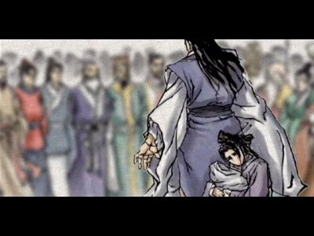
《寰神结》的结局，正与《神魔至尊传》遥遥呼应。玩家想到其中波折种种，不免伤感叹息。
《寰神结》中，除了塑造出上文中所提到的那个拥有着坚定信念的男子之外，还塑造出一段有着神话传奇色彩的故事：黑熊精高戚濮阳太守千金古青莲的爱情悲剧。
就如字面所说，这两个不同种族，不同身份背景的人，早在不经意的相识之时，就注定了幽明两隔的结局。高戚的心里有一个结，结的是山野莽夫面对知书达理的温文小姐产生的自卑。古青莲的心里也有一个结，结的是为她着想的父亲无法转变的世俗的观念。由此，所谓“爱情”，并不是那么伟大的东西――至少，它不能解开那两个纠结禁锢的死结。
汉堂是善于描写悲剧的。并不是说，生离死别就一定会是出色的悲剧。而是，《寰神结》关于高戚和古青莲的悲剧中，没有一个人是有错的――高戚面对古青莲的不坚定，面对古青莲的不执著，是由他特殊的身份所产生的，并不能由此责备他的优柔寡断；古青莲从不曾置疑自己对高戚的感情，然而，一手带大自己、处处为自己设想的父亲也是她所放不下的：如果古青莲是那种可以背弃自己的父亲，在没有得到父亲的祝福的情况下与高戚离去，那么，也不会有那么多人欣赏这位外表柔弱、内心坚强的女性了；而古青莲的父亲古寅风，也并不是那种不明事理，观念流于世俗的人。相反的，他十分欣赏高戚，但如果将自己的女儿交给这个由野兽修行而来的男子，他却是万万做不到。他的反对，正是缘于疼爱自己女儿的心情：就算高戚不是黑熊精，他也不想让女儿嫁于一个不识字的山野莽夫，更何况，他不能确定残留的兽性是否潜伏在高戚的内心里――这三个人，没有一个该受到责备。《寰神结》中，这三个人的相遇本身就已纠缠下一个无法解出头绪的死结了。唯一的办法，就是狠心地剪去其中一角――而古青莲，正是那丝轻轻陨落的线绳。
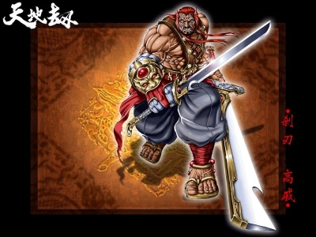
《神魔至尊传》中的邪头高戚，在《寰神结》中，还算是淳朴善良。
《寰神结》，他的故事正如他的名字一样，便在这“结”字上做下了文章。人与人之间的相遇，到相知，其中种种波澜，令人感叹。若将其放在《天地劫》这个大背景之下，更让人觉得唏嘘不已，回味无穷。
【完】 |